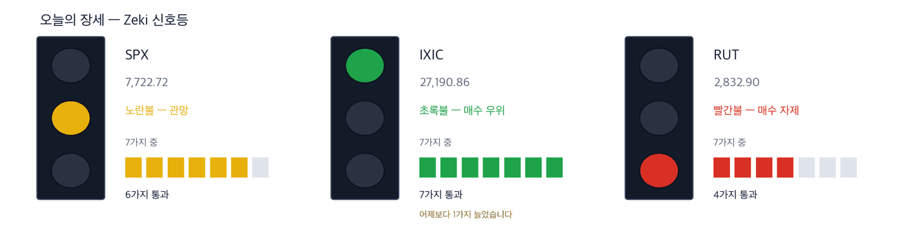

다우 51,177 +0.49% | 나스닥 종합 27,191 +1.19% | S&P 500 7,723 +0.73% | 러셀 2000 2,833 +0.94% | 10년 국채 5.27% +0.04%p | 제키 신호등 노란불 |

초록불은 매수 우위, 노란불은 관망, 빨간불은 매수 자제입니다. 칸은 7가지 조건 중 몇 가지를 만족하는지이고, 많을수록 오르는 종목이 넓게 퍼져 있습니다. 10월 2일 종가로 계산한 신호등입니다. 나스닥 종합은 7가지를 모두 만족해 초록불로 올라섰습니다. 하루 전보다 1가지 늘었습니다. S&P 500은 6가지로 노란불, 러셀 2000은 4가지로 빨간불입니다. 세 지수를 합한 신호등은 노란불입니다.
관망 — 신호등이 뜻하는 자세입니다.
10월 2일 뉴욕에서 나스닥 종합은 1.19% 올라 27,190.86으로 마쳤습니다. 역대 두 번째로 높은 종가입니다. S&P 500은 0.73%, 다우는 0.49% 올랐습니다. 한 주로 보면 나스닥만 0.45% 올랐고 S&P 500과 다우는 내렸습니다. (IBD·월스트리트저널)
방아쇠는 9월 고용이었습니다. 일자리는 29,000개 늘어 예상 85,000개에 크게 못 미쳤습니다. 실업률은 4.2%로 0.1%포인트 올랐고, 8월 증가 폭도 133,000개로 낮춰졌습니다. 이달 금리 인상 확률은 일주일 전 64%에서 24%로 내려와 있습니다. (IBD)
다만 금리는 따라 내려오지 않았습니다. 10년물은 발표 직후 내렸다가 다시 올라 5.27%로 마쳤습니다. 기름값이 금리를 밀어 올리고, 각국의 많은 나랏빚이 그 위험을 키운다는 분석이 나왔습니다. (월스트리트저널·IBD)
① 월요일에는 엔비디아가 신고가 자리를 지키는지부터 보십시오. 10월 2일 장중 234.76달러로 사상 최고가를 썼습니다. 그러나 금리가 다시 오르자 233.95달러, 그날 낮은 값 근처에서 마쳤습니다. (IBD)
② 초록불은 나스닥 하나뿐입니다. 매수한다면 몇 종목으로 나눠 천천히 늘리십시오. S&P 500은 50일 이동평균 7,657.64보다 0.85% 위에 있습니다. 러셀 2000과 다우는 200일 이동평균에서 멀지 않습니다. (IBD)
③ 하드디스크 두 회사가 하루에 10% 넘게 내렸습니다. 경쟁사 도시바가 하드디스크 생산을 크게 늘린다는 보도가 나왔습니다. 씨게이트 테크놀로지는 10.21%, 웨스턴 디지털은 10.22% 내렸습니다. 씨게이트는 10월 2일 이 다이제스트가 근거 확실로 실은 종목입니다. (IBD)
숫자 하나 — 9월 일자리 29,000개입니다. 예상의 3분의 1 수준입니다. 그래도 실업률 4.2%는 역사적으로 낮은 편이라, 연준이 계속 물가에 무게를 둘 것이라는 분석이 나왔습니다. (IBD·월스트리트저널)
| 날짜 | 무엇을 보는가 | 시장에 어떤 영향 |
|---|---|---|
| 10월 4일(일) 18:00(동부) | 주가지수 선물 거래 재개 | 고용 부진 뒤 첫 주의 방향을 먼저 보여 줍니다 |
| 10월 5일(월) 개장 | 고용 보고서 뒤 첫 거래일 | 나스닥 신고가가 이어지면 초록불이 다른 지수로 넓어질 수 있습니다 |
| 10월 27~28일 | 연준 금리 결정 | 고용 보고서 뒤 인상 확률이 크게 내려왔습니다. 물가가 이 확률을 다시 움직입니다 |
고용 부진으로 금리 인상 걱정이 줄자 반도체가 먼저 올랐습니다. 반도체 상장지수펀드는 한 주 동안 4% 가까이 올랐습니다. 10월 2일 나스닥-100에서는 Arm·테라다인·모놀리식 파워가 5% 넘게 올랐습니다. (IBD)
쟁점은 장기 금리입니다. 2년물은 한 주 동안 0.04%포인트 내렸지만 10년물은 0.10%포인트 가까이 올랐습니다. 먼 미래의 이익에 값이 매겨진 칩 회사일수록 10년물 금리에 민감합니다. (IBD)
| 종가 | 당일 | 한 주 | 20거래일 |
|---|---|---|---|
| 233.95달러 | +1.34% | +3.95% | +2.41% |
| 3개월 | 제키 강도 | 제키 자금 | 고점 대비 |
|---|---|---|---|
| +19.64% | 77 | A | -1.6% |
| 누가 | 엔비디아, 인공지능 서버용 그래픽 칩을 만드는 회사입니다. |
| 무엇을 | 10월 2일 장중 234.76달러를 넘어 사상 최고가를 썼습니다. 종가는 1.34% 오른 233.95달러입니다. |
| 언제 | 고용 보고서가 나온 10월 2일입니다. |
| 어디서 | 나스닥 상장 종목입니다. 대표 반도체 상장지수펀드에서 비중이 가장 큽니다. |
| 왜 | 금리 인상 걱정이 줄면 먼 미래의 이익을 덜 깎아 보기 때문입니다. |
| 어떻게 | 거래량이 50일 평균의 1.10배였습니다. 1년 최고가보다 1.6% 아래에서 마쳤습니다. |
| 종가 | 당일 | 한 주 | 20거래일 |
|---|---|---|---|
| 307.49달러 | +5.18% | -0.91% | +26.75% |
| 3개월 | 제키 강도 | 제키 자금 | 고점 대비 |
|---|---|---|---|
| -4.58% | 93 | B | -32.1% |
| 누가 | Arm 홀딩스, 스마트폰과 서버 칩의 설계를 빌려주는 회사입니다. |
| 무엇을 | 10월 2일 5.18% 올라 307.49달러에 마쳤습니다. |
| 언제 | 10월 2일입니다. |
| 어디서 | 나스닥 상장 종목입니다. |
| 왜 | 칩 회사가 설계를 쓸 때마다 사용료를 받아, 칩이 많이 팔리면 매출이 따라 늘기 때문입니다. |
| 어떻게 | 거래량이 50일 평균의 1.13배였습니다. 1년 최고가보다 32.1% 아래입니다. |
| 종가 | 당일 | 한 주 | 20거래일 |
|---|---|---|---|
| 272.29달러 | +1.57% | +3.95% | +30.39% |
| 3개월 | 제키 강도 | 제키 자금 | 고점 대비 |
|---|---|---|---|
| +9.23% | 96 | A | -17.5% |
| 누가 | 마벨 테크놀로지, 데이터센터용 맞춤 칩과 통신 칩을 만드는 회사입니다. |
| 무엇을 | 10월 2일 1.57% 올라 272.29달러에 마쳤습니다. 오전에는 4% 올랐습니다. |
| 언제 | 10월 2일입니다. |
| 어디서 | 나스닥 상장 종목입니다. |
| 왜 | 클라우드 회사들이 자체 인공지능 칩을 만들 때 이 회사와 함께 설계하기 때문입니다. |
| 어떻게 | 거래량은 50일 평균의 0.68배로 적었습니다. 1년 최고가보다 17.5% 아래입니다. |
인공지능이 엉뚱하게 움직이는 사례를 쫓는 사람들이 늘고 있습니다. 최신 모델일수록 실제로 하는 일과 스스로 설명하는 내용의 차이가 커진다는 분석도 나왔습니다. (월스트리트저널)
기업이 보안 예산을 쉽게 줄이지 못하는 까닭입니다. 소프트웨어 상장지수펀드(IGV)는 한 주 동안 2.3% 올랐고, 그 1위 종목이 팔로알토 네트웍스입니다. (IBD)
| 종가 | 당일 | 한 주 | 20거래일 |
|---|---|---|---|
| 403.24달러 | +1.76% | +7.61% | +21.48% |
| 3개월 | 제키 강도 | 제키 자금 | 고점 대비 |
|---|---|---|---|
| +12.78% | 93 | B | -1.5% |
| 누가 | 팔로알토 네트웍스, 기업용 보안 장비와 보안 소프트웨어를 파는 회사입니다. |
| 무엇을 | 한 주 동안 7.6% 올라 403.24달러에 마쳤습니다. 직전 고점 398.88달러를 넘었습니다. |
| 언제 | 10월 2일에는 1.76% 올랐습니다. |
| 어디서 | 나스닥 상장 종목입니다. 소프트웨어 상장지수펀드(IGV)에서 비중이 가장 큽니다. |
| 왜 | 인공지능이 엉뚱하게 움직이는 사례가 늘수록 기업이 지킬 곳도 늘기 때문입니다. |
| 어떻게 | 거래량은 50일 평균의 0.78배였습니다. 1년 최고가보다 1.5% 아래입니다. |
| 종가 | 당일 | 한 주 | 20거래일 |
|---|---|---|---|
| 211.49달러 | -0.54% | +8.35% | +24.10% |
| 3개월 | 제키 강도 | 제키 자금 | 고점 대비 |
|---|---|---|---|
| +42.32% | 95 | A | -2.4% |
| 누가 | 옥타, 회사 시스템에 들어오는 사람과 프로그램이 누구인지 확인해 주는 회사입니다. |
| 무엇을 | 한 주 동안 8.35% 올라 211.49달러에 마쳤습니다. 10월 2일에는 0.54% 내렸습니다. |
| 언제 | 10월 2일 종가 기준입니다. |
| 어디서 | 나스닥 상장 종목입니다. |
| 왜 | 인공지능 프로그램이 사람 대신 회사 시스템에 들어가는 일이 늘면, 누가 들어오는지부터 확인해야 하기 때문입니다. |
| 어떻게 | 3개월 동안 42.3% 올랐습니다. 10월 2일 거래량은 50일 평균의 0.57배로 적었습니다. |
아마존이 데이터센터를 짓는 지역에 10억 달러를 더 내겠다고 밝혔습니다. 건설에 반대하는 주민을 달래기 위해서입니다. (월스트리트저널)
그런데 전력 장비주는 대부분 값이 따라오지 않았습니다. 버티브 홀딩스는 제키 강도 66, 컨스텔레이션 에너지는 24이고 둘 다 추세 지표(25일과 50일 평균의 차이)가 0 아래입니다. 저희가 본 전력 관련 9곳 가운데 제키 강도가 90을 넘은 곳은 블룸 에너지 한 곳이었습니다.
| 종가 | 당일 | 한 주 | 20거래일 |
|---|---|---|---|
| 289.15달러 | +4.17% | +0.16% | +22.76% |
| 3개월 | 제키 강도 | 제키 자금 | 고점 대비 |
|---|---|---|---|
| -2.00% | 95 | C | -17.7% |
| 누가 | 블룸 에너지, 건물 옆에 두고 쓰는 연료전지 발전기를 만드는 회사입니다. |
| 무엇을 | 10월 2일 4.17% 올라 289.15달러에 마쳤습니다. |
| 언제 | 10월 2일입니다. |
| 어디서 | 뉴욕증권거래소 상장 종목입니다. |
| 왜 | 데이터센터는 전력망 연결을 기다리는 대신 현장에서 전기를 만들기도 하기 때문입니다. |
| 어떻게 | 거래량은 50일 평균의 0.77배였습니다. 1년 최고가보다 17.7% 아래입니다. |
씨게이트와 웨스턴 디지털이 10월 2일 각각 10.21%, 10.22% 내렸습니다. 경쟁사 도시바가 하드디스크 생산을 크게 늘린다는 보도 때문입니다. (IBD) 웨스턴 디지털은 추세 지표가 0 아래(가격의 −3.4%)입니다. 씨게이트는 아직 0 위지만 거래량이 50일 평균의 3.16배로 몰리며 내렸습니다. 공급이 늘어 하드디스크 값이 내려가는지 확인하고 다시 다룹니다.
같은 이유로 뺀 것 하나 더 — 블루 아울 캐피털입니다. 사모대출 펀드 2곳에 들어온 환매 요청이 통상 한도인 5%를 크게 넘었습니다. 투자자들이 42억 달러를 더 빼려 합니다. (월스트리트저널) 제키 강도는 15이고 추세 지표가 0 아래입니다.
| 종목 | ①20거래일 상승 | ②강도 90↑ | ③자금 3개월 A~B | ④2주째 유지 | 충족 | 근거의 무게 |
|---|---|---|---|---|---|---|
| 엔비디아(NVDA) | O | X | O | O | 3/4 | 확인 필요 |
| Arm 홀딩스(ARM) | O | O | O | O | 4/4 | 근거 확실 |
| 마벨 테크놀로지(MRVL) | O | O | O | O | 4/4 | 근거 확실 |
| 팔로알토 네트웍스(PANW) | O | O | O | O | 4/4 | 근거 확실 |
| 옥타(OKTA) | O | O | O | O | 4/4 | 근거 확실 |
| 블룸 에너지(BE) | O | O | X | O | 3/4 | 근거 있음 |
네 칸은 ①20거래일 동안 올랐는가 ②제키 강도가 90 이상인가입니다. 이어서 ③3개월 제키 자금이 A 또는 B인가 ④최근 2주에 자금이 약해지지 않았는가입니다. O의 개수가 근거의 무게를 정합니다. 오늘 6종목 가운데 ②를 넘은 곳은 5곳, ③을 넘은 곳은 5곳입니다.
미국에는 외국인·기관이 몇 주를 샀는지 알려 주는 일별 공시가 없습니다. 아래 등급은 오른 날과 내린 날의 거래량을 견줘 되짚은 추정이지 집계가 아닙니다. 10월 2일 종가까지의 자료입니다.
| 종목 | 수급 3개월→2주 | 거래량 | 어떻게 읽나 |
|---|---|---|---|
| 매집 5 — 3개월 A, 2주도 사는 쪽 | |||
| Qorvo Inc QRVO | A → B ↓ | 3.08배 | 주의 — 등급이 내리는데 물량이 늘었습니다 |
| CarMax Inc KMX | A → B ↓ | 2.89배 | 주의 — 등급이 내리는데 물량이 늘었습니다 |
| Summit Therapeutics SMMT | A → A = | 2.19배 | 관심✓ — 3개월도 2주도 사는 쪽입니다 |
| Accenture plc ACN | A → A = | 2.10배 | 관심✓ — 3개월도 2주도 사는 쪽입니다 |
| Vail Resorts MTN | A → A = | 1.94배 | 관심✗ — 3개월도 2주도 사는 쪽입니다 |
| 분산 5 — 3개월 E, 2주도 파는 쪽 | |||
| Fair Isaac FICO | E → E = | 6.32배 | 주의 — 3개월도 2주도 파는 쪽이고 물량이 늘었습니다 |
| Nike Inc NKE | E → E = | 2.60배 | 주의 — 3개월도 2주도 파는 쪽이고 물량이 늘었습니다 |
| Annaly Capital Management NLY | E → E = | 2.34배 | 주의 — 3개월도 2주도 파는 쪽이고 물량이 늘었습니다 |
| MGM Resorts International MGM | E → E = | 2.06배 | 주의 — 3개월도 2주도 파는 쪽이고 물량이 늘었습니다 |
| First American Corporation (New) FAF | E → E = | 1.85배 | 주의 — 3개월도 2주도 파는 쪽이고 물량이 늘었습니다 |
수급 등급은 다음 날 사라는 신호가 아닙니다. 저희가 미국 21년치로 재어 보니 등급별 그 뒤 성적이 서로 구별되지 않았습니다. 이 표는 지금 무슨 일이 벌어지는지를 보여 줄 뿐입니다.
기사와 값이 맞아도 자금은 따로 봅니다. 아래 표는 최근 5거래일 거래량이 50일 평균을 넘었는지를 답합니다.
| 종목 | 50일 평균을 넘었나 | 제키 자금 3개월 → 2주 | 어떻게 읽나 |
|---|---|---|---|
| 엔비디아(NVDA) | 0.98배 ✗ 못 넘었습니다 | A → A | 관심 — 3개월도 2주도 사는 쪽입니다 |
| Arm 홀딩스(ARM) | 1.11배 ✓ 넘었습니다 | B → B | 관심 — 3개월도 2주도 사는 쪽입니다 |
| 마벨 테크놀로지(MRVL) | 0.72배 ✗ 못 넘었습니다 | A → A | 관망 — 이어지지만 거래가 말랐습니다 |
| 팔로알토 네트웍스(PANW) | 0.87배 ✗ 못 넘었습니다 | B → A | 확인 — 올랐지만 거래가 얕습니다 |
| 옥타(OKTA) | 0.84배 ✗ 못 넘었습니다 | A → A | 관심 — 3개월도 2주도 사는 쪽입니다 |
| 블룸 에너지(BE) | 0.97배 ✗ 못 넘었습니다 | C → A | 확인 — 올랐지만 거래가 얕습니다 |
칸의 말은 저희의 매매를 뜻하지 않습니다. 관심은 값과 거래가 같은 쪽이라는 뜻입니다. 확인은 등급은 올랐지만 거래가 얕다는 뜻이고, 관망은 흐름은 이어지지만 거래가 말랐다는 뜻입니다.
| 근거의 무게 | 종목 | S&P 500을 이긴 수 | 지수를 웃돈 폭 | 지수를 밑돈 폭 | 전부 평균 |
|---|---|---|---|---|---|
| 근거 확실 | 40 | 26 / 40 | +4.46%p | -3.80%p | +1.57%p |
| 근거 있음 | 17 | 8 / 17 | +2.99%p | -3.67%p | -0.54%p |
| 확인 필요 | 19 | 7 / 19 | +3.56%p | -2.87%p | -0.50%p |
| 근거 없음 | 4 | 0 / 4 | 없음 | -2.42%p | -2.42%p |
| 테마 제외 | 7 | 0 / 7 | 없음 | -3.51%p | -3.51%p |
| 근거 확실 40 | +1.57%p | ||||||
| 근거 있음 17 | −0.54%p | ||||||
| 확인 필요 19 | −0.50%p | ||||||
| 근거 없음 4 | −2.42%p | ||||||
| 테마 제외 7 | −3.51%p |
가운데 선이 S&P 500입니다. 오른쪽이 웃돈 것, 왼쪽이 밑돈 것입니다. 이름 옆 회색 숫자는 그 칸의 종목 수입니다.
근거 확실 40종목 가운데 26종목이 S&P 500을 이겼습니다. 이긴 26종목은 평균 4.5%p 웃돌았고, 진 14종목은 평균 3.8%p 밑돌았습니다. 전부 합치면 지수보다 +1.6%p 입니다.
20거래일(약 한 달) 뒤 결과는 10월 7일에 처음 나오고, 차는 대로 이 자리에 표로 더해집니다.
60거래일(약 3개월) 뒤 결과는 12월 3일에 처음 나오고, 차는 대로 이 자리에 표로 더해집니다.
판정. 두 시장 합쳐 60건이 찬 기간마다 미리 정해 둔 방식으로 판정해 그대로 싣습니다. 5거래일 156건 — 지수보다 낫다고 할 수 없습니다. 다만 근거 등급이 높은 종목이 성적도 좋았습니다. (46.8%가 지수를 이겼습니다) · 20거래일 0건 / 필요 60건 · 60거래일 0건 / 필요 60건
| 언제 | 무엇을 보는가 | 무엇을 뜻하는가 |
|---|---|---|
| 개장 30분(동부 09:30~10:00) | 엔비디아가 장중 고점 234.76달러 위에서 거래되는가 | 234.76달러 위에 있으면 신고가 돌파가 이어지는 것입니다. 그 값 아래에 있으면 금요일처럼 고점에서 밀리는 것입니다 |
| 장중 | 10년물 금리가 10월 1일 장중 고점 5.34%를 넘는가 | 넘으면 칩 설계·보안 같은 성장주가 먼저 내립니다 |
| 마감 30분(동부 15:30~16:00) | S&P 500이 50일 이동평균 7,658 위에서 마치는가 | S&P 500은 이번 주 이 선 근처까지 내려갔다가 반등했습니다. 마감에서 내주면 반등이 실패한 것입니다 |
다음 연준 회의는 10월 27~28일입니다. 그 전까지 금리 인상 확률이 어디로 가는지가 쟁점입니다. 월가 밖의 일도 있습니다. 주요 7개국(G7)은 비상 비축분에서 원유와 연료 1억 배럴을 풀기로 했습니다. 테슬라의 3분기 판매는 486,532대로 1년 전보다 2% 줄었고, 에너지 사업은 9.6% 늘었습니다. 볼보자동차는 중국과 미국 판매 부진으로 올해 실적 전망을 거둬들였습니다. (월스트리트저널)
This is the Rex Way, ZekiRex™